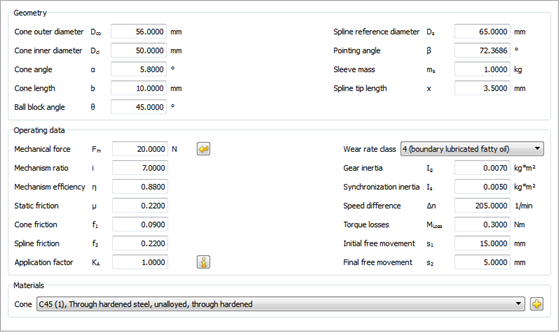

|
|
|


同步
使用此模块，根据指定的几何形状、力和应用数据计算齿轮同步时间及总时间。此外还会执行一些附加计算，如发热、摩擦功率和耐磨性。可对给定锥面数（单锥、双锥或三锥）的常见同步器类型进行计算。

图54.1：同步模块选项卡
English Original
Synchronization
Use this module to calculate the gear synchronization time and total time, based on the specified geometry, forces and application data. Some additional calculations for heat development, frictional power, and wear resistance, are also performed. Calculations can be performed for common types of synchronizations for a given number of cones (single, double or triple cone).
Figure 54.1: The synchronizer module tab